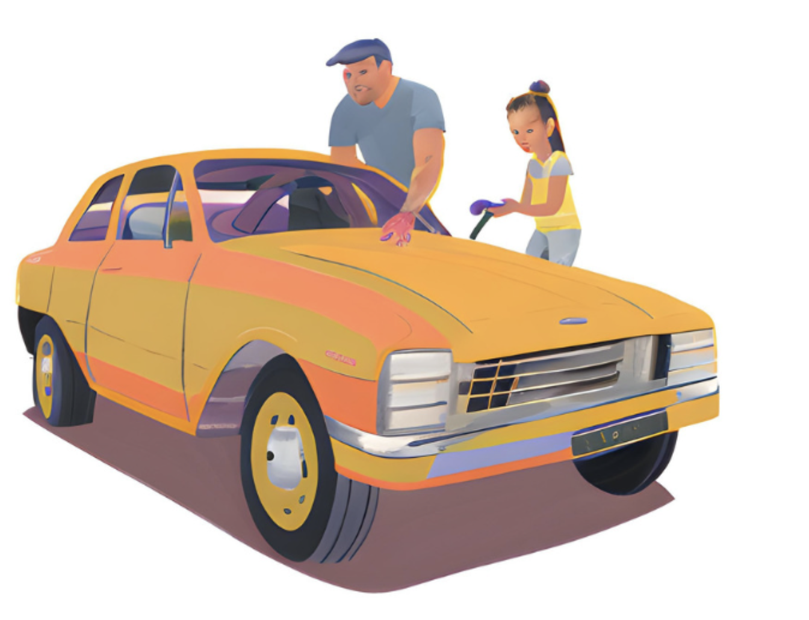

Garage
As Tommie comes home she sees her dad in the garage and since he’s working on his car she takes this opportunity to ask him about a party while he’s in deep focus.
“How was training shady?”
“Quit it. That nickname doesn’t even make sense” Tommie complains
“Anyways…do you think I could have a little get together sometime soon?”
“Huh, a what?”
“Just like a small party, you know? It’s my senior year and I’ve done nothing all summer. I just want to have like uhhhhh a uhh, back to school, small thing really”
“Uhh yea, sure. Of course…yea. Could you hand me that bolt right there?”
Tommie hands him the bolt and skips inside to plan the biggest party of the year.